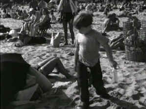

|
Little Fugitive,The(SE)A-,B+ |
|
Image/1953/80m/BW
1.33 |
Really quite a
remarkable film, an ode to a past world of working class glitter,
The Little Fugitive should not be
passed up. Too many home theater enthusiasts are immediately turned off by
the simplicity of black and white images (Not really so simple, are they?)
and short change themselves of experiencing divine movie watching.
 |
|
Joey collects
bottle at Coney.©Kino |
Two young brothers living in working class Brooklyn
play in the streets, hang out with the guys, and interact with each other
like myriad brothers before them. Joey is seven and his big brother Lennie
is ten. The mundane neighborhood summertime play takes on another
dimension when Lennie and his older friends decide they want to get rid of
Joey for a spell. They convince Joey that something terrible has happened
during the course of their play. The younger boy is petrified by the
ramifications of his act and runs away from the scene to a place whose
wonders can make him forget almost anything: Coney Island.
Photographed and related from the point of view
of the young boy, The Little Fugitive brings to life the grand energy of the
bustling beach. Bodies laid out end-to-end present a picture of 1950s
America. The photography is
so startling that it could actually be broken down into a volume of
stills.
Young Richie Andrusco is perfectly natural under
Engel’s direction. Perhaps it’s the naturalistic style of shooting
that makes the first time actor so comfortable under the lens’ eye. He
never did make another motion picture though. But above all, the camera is
the star and Morris Engel does an amazing job of making his instrument
sing the song of Coney Island.
I must relate how powerful this film was when
seen through the impressionable eyes of youth. Once upon a time when I was
somewhere between Joey and Lennie’s age, I ran away to Coney Island from
my Queens home. You’d never guess what inspired this fabled destination.
Fortunately I stopped at my grandmother’s apartment in Brooklyn to charm
a few bucks from her for the amusements and hot dogs and before the long
day and night had ended the police found me wandering the Coney boardwalks
and speeded me home in a patrol car.
Would-be filmmakers can use The Little
Fugitive as a study course in how to approach filmmaking. The love
embellished on the celluloid is evident in every frame. As a bonus, Kino
Video has packaged The Little Fugitive as a special edition with
audio commentary by director Morris Engel. Remember, he’s looking back
almost fifty years, but he still does a credible job examining the
experience. The elements for the DVD are in very good shape. Expect
clean images with good contrast. Some of the dubbing sounds a bit false,
but that’s not the fault of the DVD. Sound is clean and image is sharp
enough to satisfy photography lovers. Not to be missed! |
|
|
|

Vanishing, The/A,B
Like a perfect short tale from Poe. Not typical fare digested by
American audiences. The Vanishing, a film that ranks with classics of the
genre, must be considered a collectible. In Dutch with English subtitles.

Click on the DVD MIA symbol for profiles of DVDs missing
in action.
Add films to the DVD MIA Master List by filling out a simple
form. Click Here


The Movie Poster
Archive include extensive poster images from the films of stars like Susan
Hayward, Kirk Douglas, Katharine Hepburn and many more. Our featured
star is Spencer Tracy.

Selections from the Feature
Archive include articles on Akira Kurosawa, Frank Darabont, Blonde Bimbos, Hollywood Street Gangs, or Vietnam: The Hollywood Pariah, and many
more....
Is North by Northwest Hollywood's definitive exploration of the nose? From
schnozzles to beezeers, film mavens make the most of the foremost. Click
on Mount Hitchcock for more.


Mystery writer Fred Hunter digs into classic films on DVD. Check out his
insightful reviews at The Classics on DVD.
MRQE
Find reams of movie and DVD reviews at the Movie Review Query
Engine, a index of reviews appearing on the Internet.
 |
|
Manufacturer of
computer-video interfaces, switchers, distribution amplifiers,
computer-video scan converters, and high resolution cable. Found
in many high end home theater systems.
|
|